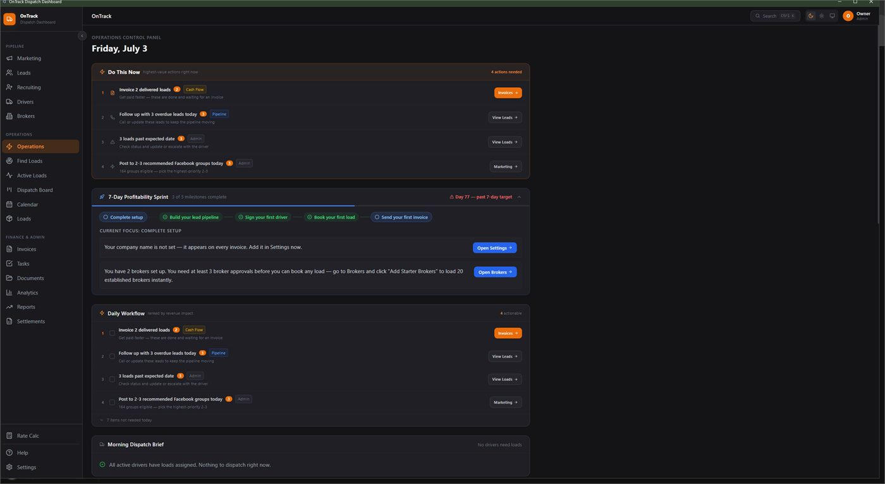
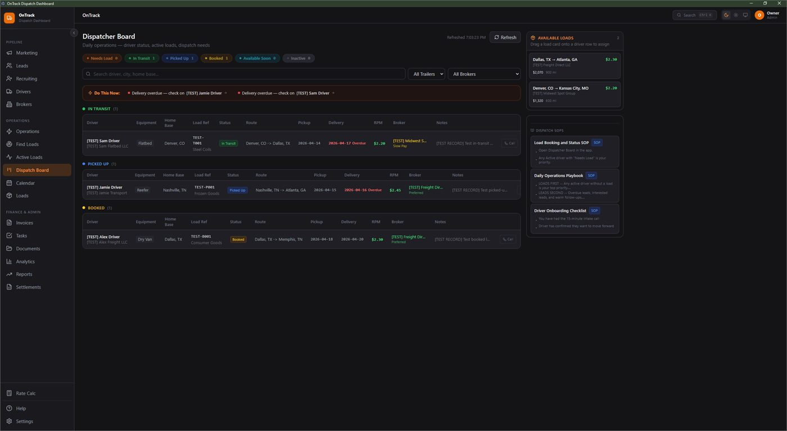
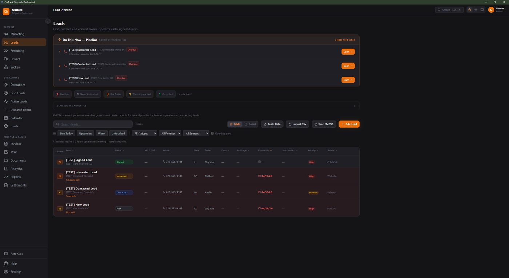
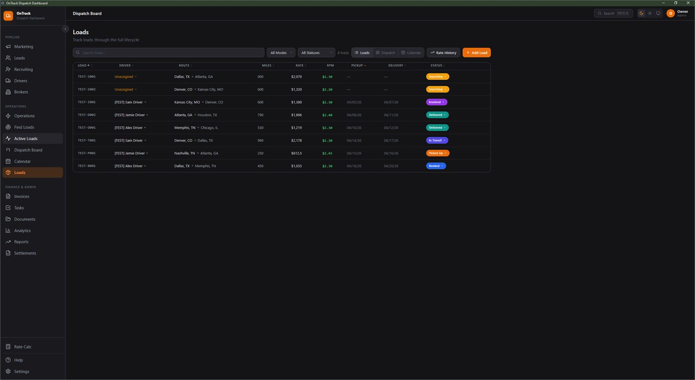
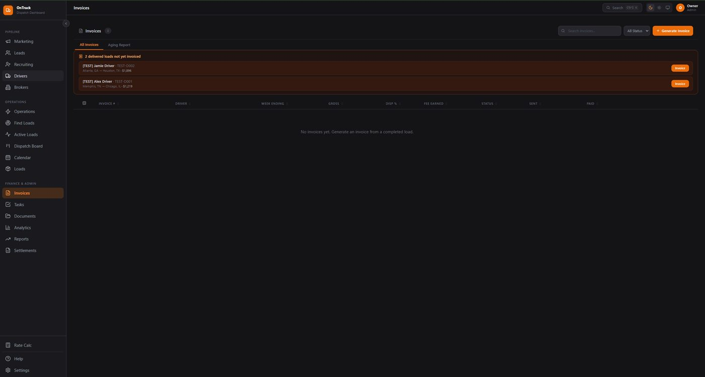
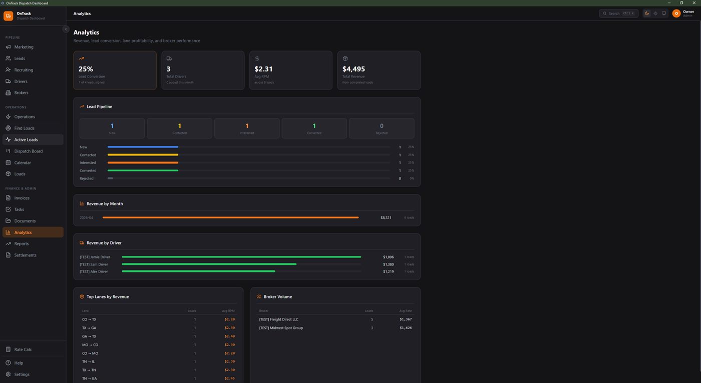

Early access — founding spots open
Your whole dispatch operation. One screen.
The OnTrack Dashboard is all-in-one dispatch ops software for independent dispatchers and small fleets: every load, lane, rate, driver, broker, and document — plus a weekly profit view that tells you the truth.

Actual product screenshot — shown with demo data.
Everything a dispatch desk actually touches
Not a bloated TMS built for 200-truck carriers. The tools a one-to-fifteen-truck operation uses every single day.
Load board & tracking
Every load from booked to POD in one board: pickup and delivery windows, check-calls, in/out times, and status at a glance — so nothing falls through between trucks.
Rate & RPM intelligence
Rate-per-mile computed on every load, lane history you can pull up mid-negotiation, and your break-even number front and center — know your floor before the broker names theirs.
Driver & carrier management
Drivers, trucks, and carriers with documents, insurance dates, and preferences in one place. See who's empty, who's on a reset, and who's due for a load next.
Broker screening & history
Payment terms, past rates, and red flags logged against every broker. The 60-second gut-check that keeps you off net-90 paper and away from double-brokers.
Paperwork & documents
Rate cons, BOLs, PODs, and carrier packets attached to the loads they belong to. When a payment gets disputed, the paper trail is already built.
Weekly profit view
Gross, net, RPM, and detention owed — per week and per truck. The "am I actually making money" answer, without building a spreadsheet at midnight.
See it in action
Real screenshots from the app, shown with demo data.

Dispatch Board
Track every driver and load on one board, without juggling spreadsheets or sticky notes.

Leads & CRM
Keep new carrier and driver leads organized so nobody falls through the cracks.

Loads
Manage active loads, routes, and rates in one place from pickup to delivery.

Invoices
Turn delivered loads into invoices fast, so you get paid without the paperwork headache.

Analytics
See which loads and lanes actually make you money, at a glance.
Built for the desk you're actually running
Independent dispatchers
Run multiple carriers without dropping balls. Every carrier's loads, docs, and settlements separated and searchable — look buttoned-up to the carriers who pay you.
Owner-operators
You're the driver and the back office. Log the load in a minute at the dock, and let the dashboard keep the rate math, detention clock, and paperwork straight.
Small fleets (2–15 trucks)
See the whole fleet on one board: who's loaded, who's empty, who's profitable. Catch the truck that's quietly losing money before the quarter does.
Founding-member early access
The Dashboard is rolling out to a small group of working dispatchers and fleet owners first. Founding members get in before public launch, lock the founding rate for life, and get a direct line to shape what gets built next.
- Founding rate, locked for life — final pricing is being set with early users; founders will always pay less than launch price.
- Direct input on the roadmap — tell us the report or workflow you need and watch it ship.
- The Vault included — founding members get the full Run Your Dispatch Vault ($97) free on day one.
Become a founding member
$29/month or $290/year, locked in for life as a founding member. Download the Windows installer, activate with your license key, and you're dispatching in minutes.
Get the Dashboard — $29/moQuestions first? Email us — no card, no commitment.
Or call (405) 300-0433 — you'll talk to the person who built it.
Want a taste while you wait? The Dispatch Vault gives you the same operating system in template form today.
Fair questions
Is this another bloated TMS?
No. Big TMS platforms are built for carriers with a back-office team and priced like it. OnTrack is built for the desk where one person is doing dispatch, billing, and vetting — usually before 7am.
What does it cost?
Founding pricing is being finalized with the first wave of users — that's part of why early access exists. What's guaranteed: founding members lock their rate for life and it will be less than public launch price. No answer will ever be "call sales."
Do I need to install anything?
Yes — OnTrack is a Windows desktop app. One quick installer, and everything lives in a local database on your machine: fast, private, and it keeps working when the truck-stop Wi-Fi doesn't.
I already use spreadsheets. Why switch?
Spreadsheets work — until the formulas break, the file forks, or nobody logs the in/out times. The Dashboard is the same logic with the discipline built in. And if you love spreadsheets, the Vault has the best ones we've ever built.
Be running it before your competition hears about it
Founding spots are limited on purpose — early users get real attention. One email gets you in line.
Get the Dashboard — $29/mo